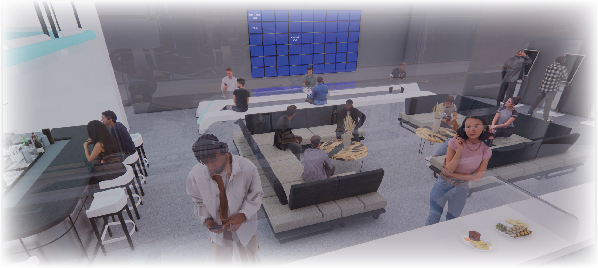

Frequently Asked Questions
A: Autonomy VR is a fully autonomous bar, restaurant, and virtual reality arcade that functions solely on autonomous systems, software, and robotics. It's a one-of-a-kind design that attracts a community of like-minded individuals interested in virtual reality gaming, evening leisure, and the new age of technology.
A: At Autonomy VR, you can order drinks and food digitally using a tablet or smartphone. You can browse the digital menu, customize your order, and place your request, which will be transmitted directly to the robotic systems and prepared by the bionic bartender and Moley Kitchen robots.
A: Autonomy VR offers a range of virtual reality experiences, from immersive gaming and simulations to social and educational experiences. You can choose from a variety of experiences, including action-packed games, creative applications, and educational content.
A: Autonomy VR does not have a formal dress code, but we encourage guests to wear comfortable clothing and shoes suitable for virtual reality experiences.
A: Yes, Autonomy VR offers private event bookings for groups of all sizes. Whether you're hosting a birthday party, corporate event, or special occasion, we can accommodate your needs and provide a unique and memorable experience for your guests.
A: Yes, Autonomy VR has a minimum age requirement of 18 years old due to the nature of the venue and the virtual reality experiences offered.
A: The bionic bartender at Autonomy VR is an advanced robotic system that uses a combination of AI, machine learning, and sensors to prepare and serve drinks. Guests can place their orders digitally, and the robotic system will mix, pour, and garnish the drinks to perfection.
A: Autonomy VR takes guest safety very seriously and has implemented several measures to ensure a safe and enjoyable experience. The venue is equipped with advanced ventilation and air filtration systems to ensure a clean and healthy environment. Additionally, staff members are available to assist guests with any questions or concerns, and emergency protocols are in place in case of any issues.
A: The Moley Kitchen at Autonomy VR prepares a range of dishes, including appetizers, entrees, and desserts. The digital menu offers a variety of customizable meal options, with detailed descriptions of each dish's ingredients and flavors.
A: No, Autonomy VR does not allow guests to bring their own virtual reality equipment. The venue provides all necessary equipment and accessories for a seamless and enjoyable virtual reality experience.
A: The cost of visiting Autonomy VR depends on several factors, such as the number of virtual reality experiences you choose to participate in and the food and drinks you order. However, Autonomy VR offers affordable pricing options and packages for guests to choose from.
There are a few ethical concerns that some people have raised about this type of establishment. One concern is that autonomous systems may replace human workers, which could lead to job loss and economic insecurity for workers. Another concern is that relying on technology to run a bar and restaurant could result in a loss of personal touch and connection between customers and staff.
Yes, there will be human oversight of the autonomous systems to ensure that they are functioning properly and that the food and drinks being served are of high quality. However, the majority of the day-to-day operations will be handled by the autonomous systems.
Yes, the robots will be programmed to follow strict food safety protocols to ensure that all food is safe to eat. Additionally, the robots will be regularly maintained and cleaned to prevent any contamination.
The prices may be lower than at a traditional bar and restaurant, but this will depend on a variety of factors such as the cost of maintaining the autonomous systems and the quality of the food and drinks being served. Additionally, there may still be some human workers involved in the operations of the establishment, such as maintenance workers and oversight staff.
